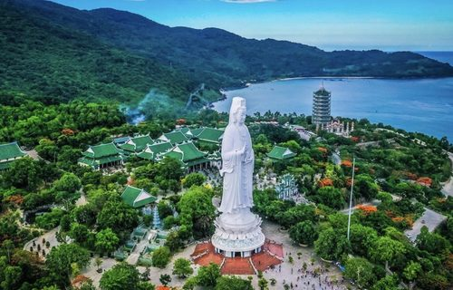
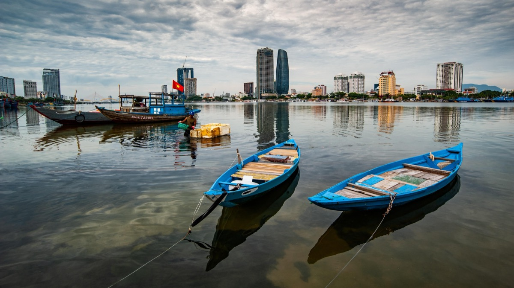

Da Nang's best experiences are free and outdoors: My Khe Beach in the morning, Son Tra Peninsula and Linh Ung Pagoda, the Han River at night. Add Marble Mountains for a half-day, Hoi An for a day trip, and Hai Van Pass if you ride. Ba Na Hills is worth it if the Golden Bridge is on your list — go midweek and set expectations. The Cham Museum is underrated and takes 90 minutes.
My Khe + Son Tra + Han River at Night
Three things, one day, all free. Beach at 7am while it's still quiet. Son Tra Peninsula mid-morning — hire a Grab up to the summit road, walk around Linh Ung Pagoda, look for douc langurs in the trees. Han River in the evening: walk the Bach Dang waterfront, eat at a riverside restaurant, stay for the Dragon Bridge fire show if it's Friday or Saturday at 9pm. That's Da Nang done properly.
Son Tra Peninsula & Linh Ung Pagoda
Nowhere else in Vietnam puts a forested wildlife reserve this close to a city beach. Son Tra is 10 minutes from My Khe: a mountain peninsula with douc langurs, coast views, and a 67-metre Lady Buddha that's genuinely impressive up close. Go before 9am. The summit road is one of the best motorbike rides in central Vietnam, and it's completely free.
The Activities Worth Your Time

My Khe Beach
Twenty kilometres of coastline, clean from February to August, with a genuine morning culture that precedes the tourists: mass swimming, exercise groups, bánh mì vendors, sugarcane juice. The beach itself is wide, the sand is good, and before 9am it belongs mostly to locals. Peak season brings jet ski operators mid-morning — arrive early and leave before it heats up.
GOOD TO KNOW: The stretch in front of the An Thuong area (roughly Vo Nguyen Giap between An Thuong 2 and 4) is the cleanest and least commercial.
Son Tra Peninsula & Linh Ung Pagoda
Da Nang's best underpublicised experience. Hire a Grab to the peninsula, pick up a motorbike or walk the summit road, watch for red-shanked douc langurs in the trees. The Lady Buddha at Linh Ung Pagoda is 67 metres — larger than it looks in photos. Views from the top cover the whole coastline from Hai Van Pass south to Hoi An. Free entry. Combine with My Khe for a near-perfect morning.

Han River & Dragon Bridge
The 666-metre Dragon Bridge breathes fire and water every Friday and Saturday at 9pm. Watch from the east bank (the west bank has poor sightlines). The surrounding Bach Dang waterfront is Da Nang's best evening walk any night of the week — restaurants, riverside bars, and a pedestrianised strip that actually functions. The Cham Museum is a 10-minute walk from here.

Marble Mountains
Five limestone karsts 9km south of My Khe, riddled with caves, Buddhist shrines, and elevated city views. Thuy Son (Water Mountain) is the main climb — take the elevator up (15,000 VND), walk down through the cave system. Budget 3–4 hours. It's genuinely good as half-days go, and combines easily with a morning at Non Nuoc Beach directly below.

Hoi An Day Trip
30km south, 40 minutes by Grab. UNESCO Ancient Town is a genuinely impressive ensemble of 15th–19th century trading houses, assembly halls, and Japanese architecture — and it's at its best before 10am when tour groups arrive. Spend 3 hours on foot, eat cao lầu or cơm gà at a riverside spot, browse the market, and return by 3pm. One of the best day trips in central Vietnam.
GOOD TO KNOW: Old Town entrance tickets are 120,000 VND for 5 sites. Buy at the ticket office on Hoang Dieu Street on arrival.
Hai Van Pass
The mountain pass north of Da Nang is one of Vietnam's most scenic road sections — cloud forest, dramatic drops to the coast, and ruins of old French and American military positions at the top. Hire an Easy Rider guide from Da Nang for the safest and most contextual way to do it. Not suitable if you're uncomfortable on motorbikes in mountain conditions.

Museum of Cham Sculpture
The world's largest collection of Cham artefacts: 300+ stone sculptures spanning the 7th–15th centuries, well-labelled in English, compact, and genuinely impressive. One of Vietnam's better regional museums. On the Han River, easy to combine with the Dragon Bridge evening walk. Don't skip it.

Ba Na Hills & Golden Bridge
Sun World's mountain resort 35km west. The Golden Bridge — a walkway held by giant stone hands — is legitimately photogenic and worth seeing. The cable car is impressive. But this is a commercial theme park, not a cultural experience: crowded, expensive, and deliberately engineered for photos. Manage expectations accordingly. Go midweek, arrive at opening, and you'll enjoy it fine.
THE TRADEOFF: Expensive, crowded, and commercial — but the Golden Bridge is genuinely photogenic. Worth it if that shot is on your list. If not, spend the day in Hoi An instead.If You Have More Time
An Thuong Food Street
Behind My Khe on An Thuong 4 road. Bún bò Huế, mì Quảng, grilled meats, fresh seafood. Active from 5:30pm. The local version of a night market without the tourist markup.
Surfing at My Khe
September to December has the best swell. Boards rent from around 150,000 VND/hour. Several schools operate on the beach north of the Furama. Beginners welcome.
Han Market
Da Nang's most accessible market for visitors. Good for souvenirs, silk, tailoring, and a local breakfast at 7am on the ground floor. See our markets guide for full detail.
Da Nang Bars & Cafes
An Thuong strip has the best concentration of both. Sky 36 for views, Section 30 or The Craftsman for craft beer. See our bars guide and cafes guide.